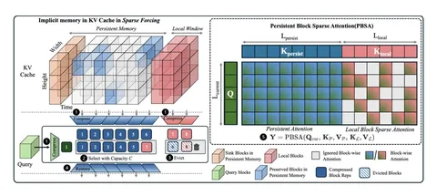

Сегодня разбираем работу, в которой предложили sparse attention для авторегрессионной генерации видео.
В целом идея sparse attention в видео не новая. В предыдущих работах, таких как Sparse VideoGen и Sparse VideoGen2, разреженный паттерн задавали заранее или подбирали динамически, но в основном уже на инференсе. Из-за этого возникал мисматч — обучалась модель с обычным аттеншном, а при генерации получала другую схему доступа к контексту.
В Sparse Forcing предлагается end-to-end-подход, в котором sparse attention становится частью обучения. Кроме того, генерация видео происходит именно авторегрессионно, а не bidirectional, как было в прошлых статьях.
Подход опирается на наблюдение о том, что аттеншн в видео обычно собирается в блоки, и модель смотрит не на всю историю равномерно, а на несколько участков прошлого контекста и окно вокруг текущей позиции.
Тензор видеолатентов разбивают на небольшие пространственно-временные блоки. Дальше для каждого query-блока динамически выбирают фиксированное число блоков, на которые ему полезнее всего смотреть.
Память при этом делится на две части:
Чтобы не считать полный аттеншн только ради выбора нужных блоков, каждый блок сначала сжимают в один вектор простым усреднением его токенов. По этим представлениям считают грубый attention score. Его используют двумя способами:
1) внутри локального окна для каждого query-блока выбирают top-k релевантных блоков и точный аттеншн считают только по ним;
2) агрегированный score по истории решает, какие блоки удержать в persistent memory (Top-C) при вытеснении из локального окна. При этом сами persistent-блоки не фильтруются через top-k — их плотно аттендят все query.
То есть сначала делают дешёвый поблочный скоринг, а потом считают точный аттеншн по выбранному подмножеству. Сам sparse-паттерн меняется динамически и отдельно для каждого query, но число выбранных блоков остаётся фиксированным. Похоже sparse attention устроен в DeepSeek, где тоже есть отдельный скоринг на более компактных представлениях, который определяет, к каким блокам обращаться.
Для такого подхода нужны специальные кернелы. Авторы заявляют ускорение относительно FlashAttention-2 и показывают, что оно зависит от размера локального окна и отношения выбранных блоков к общему контексту, доли persistent-памяти (N_P/N_L) и длины блока. Динамический отбор блоков должен быть особенно полезен для длинной авторегрессионной генерации, где история и KV-кэш постоянно растут.
Но здесь возникает главный вопрос к работе. Кернелы не опубликованы, кода на момент написания поста тоже нет. В экспериментах sparse attention сравнивают в основном с FlashAttention-2, хотя всё запускали на H100 и могли бы проверить FlashAttention-3. Поэтому оценить реальный спидап сложно.
С видеомоделями ситуация похожая. Авторы сравниваются с CausVid, Self Forcing, SkyReels-V2 и MAGI-1 и говорят о сниженной задержке и меньшем количестве артефактов. Но самых близких sparse-бейзлайнов в сравнении нет — от них авторы открещиваются говоря, что паттерн одновременно обучаемый, динамический и авторегрессионный.
В итоге модель сама учится работать с ограниченным набором блоков, поэтому качество должно проседать меньше. Динамический выбор контекста тоже кажется полезнее фиксированной маски.
Но насколько большой практический выигрыш даёт именно этот метод, по приведённым экспериментам понять трудно — из-за слабых бейзлайнов и отсутствия кода.
Разбор подготовил
CV Time
